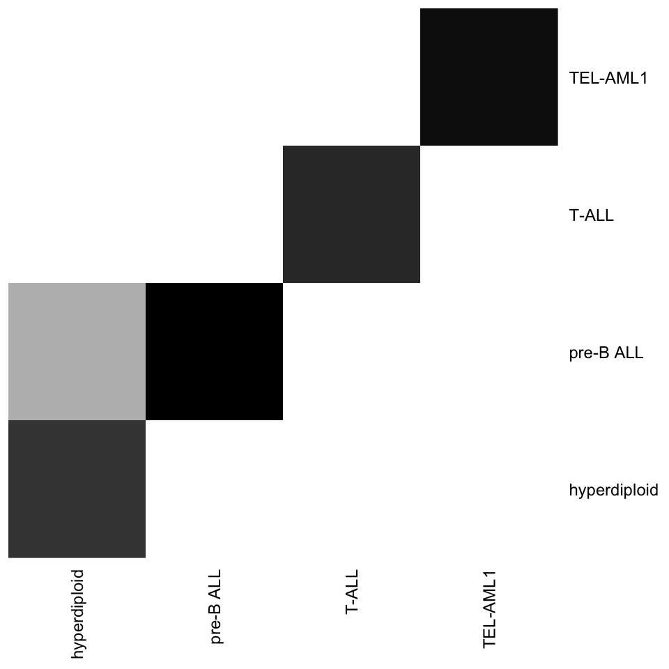

Practical – Supervised classification – Microarrays
STAT2
Jacques van Helden
2020-04-08
pkg <- "e1071"
if (!require(pkg, character.only = TRUE)) {
message("Installing package ", pkg)
install.packages(pkg, dependencies = TRUE, quiet = TRUE)
require(pkg)
}Introduction
In this practical we will define a pipeline to run supervised classification on a multivariate dataset (transcriptome microarrays of leukemia from Den Boer 2009).
Study case
Reference: Den Boer ML et al. (2009). A subtype of childhood acute lymphoblastic leukaemia with poor treatment outcome: a genome-wide classification study. Lancet Oncol. 2009 10:125-34.
- DOI: [doi: 10.1016/S1470-2045(08)70339-5]
- Pubmed: [PMID 19138562].
- Raw data available at Gene Expression Omnibus, series [GSE13425]
- Preprocessed data: https://github.com/jvanheld/stat1/tree/master/data/DenBoer_2009.
Data pre-processing
The raw microarray data has been pre-processed in order to dispose of a ready-to-use dataset. pre-processing included
- filtering of barely detected or poorly expressed genes,
- log2 transformation to normalise the raw measurements
- between-sample standardisation to enable comparison between the different samples.
Defining the local folders for this practical
#### Define Local directories and files ####
## Find the home directory
myHome <- Sys.getenv("HOME")
## Define the main directory for the data and results
mainDir <- file.path(myHome,
"STAT2_CMB_practicals",
"den-boer-2009")
dir.create(path = mainDir,
recursive = TRUE,
showWarnings = FALSE)
message("Main dir: ", mainDir)
## Define the dir where we will download the data
destDir <- file.path(mainDir, "data")
dir.create(path = destDir,
recursive = TRUE,
showWarnings = FALSE)
message("Local data dir: ", destDir)
## Define a file where we wills tore the memory image
memImageFile <- file.path(mainDir, "DenBoerData_loaded.Rdata")
message("Memory image file of the loaded data: ", memImageFile)Re-loading the pre-proocessed data
The detailed procedure to build the data set from tab-delimited files was described in the practical Data loading and exploration.
At the end of this practical we saved a memory image with the data. We provide hereby a few lines of code that should enable you to reload this data.
#### Load the data from a memory image ####
message("Loading data from memory image file")
system.time(load(memImageFile)) user system elapsed
0.559 0.028 0.588 Recommendations
- Remember that we might need to run the same analyses
- with different datasets
- with different classifiers (to compare their performances)
- with different parameter settings (to optimise a classifer)
The code needs to be conceived with this in mind.
Split your code in modular sections. Whenever useful, write functions that can be called to run the different steps of an analysis.
The code should be re-usable by other people. For this, you need to document it.
- for developers who would reuse it and modify it (code documentation with hash comments)
- for users (roxygen2 documentation for all the functions, tutorials, vignettes)
Use the
message()function (but not too many) to indicate when you start a task and finish a task + the main information (e.g. datadir, result dir, …).Beware: traditionally, omics datasets (transcriptome, metabolome, proteome) are provided as matrices with 1 row per individual and 1 column per feature (variable),n but supervised classification methods expect martrices with individuals as rows and features as columns –> you will need to transpose the matrix.
R markdown recommendations
- Name each chunk of code (you need to give a unique name)
- In the chunk header, you can use different options to specify the figure size (e.g.
fig.width=7, fig.height=5, and the relative width they will occupy on the output page (e.g. òut.width=“80%”) - When you interpret your data, do not hard-code the numerical results (e.g. performance metrics obtained at the end). Instead, you can insert dynamically their values in the text of the report with pieces of R code.
Pipeline for the final report
Load the data (done above)
Exploring the data (done last time)
- histogram with the distribution of values
- boxplots (if we have too many individuals, take subsets of them)
- PC plots (PC1 vs PC2, PC3 vs PC4, …) with a coloring of the classes
Normalisation (no need here, the data we loaded was previously pre-processed)
Class filtering: suppress the classes with less than 30 individuals, because it will be very difficult to train a program properly with so scsarse data.
Supervised classification, with 3 steps
Split the data into training and testing subsets
- stratified subsampling: same proprotions of the 4 classes in the training as in the testing
- iterative subsampling with 2/3 for training and 1/3 for testing.
- run the subsampling 10 times independently
- Train a classifier with the training subset
Evaluate the performances of the trained classifier with the testing subset 4.4. Apply the classification to an independent dataset
Reduction of dimensionality. Choose one among the following approaches
- Very simple (rudimentary) criterion: variable ordering by decreasing variance, and keep the \(n\) top variables. Analyse the impact of \(n\)
- PCA: keep the \(n\) first components
- Differential analysis: keep the \(n\) most significant genes from differential analysis (I will provide you with the sorted list of genes)
Evaluate the impact of parameters on the performances. Examples
- KNN: impact of K, the number of neighbours
- SVM: impact of the kernel
- Random Forest: impact of number of iterations, … other parameters
- Discriminant analysis: impact of the homoscedasticity assumption (compare LDA with QDA).
Compare the performances of 2 different classification methods (e.g. LDA, QDA, SVM, RF, KNN)
Interpret the results
statistical performances
try to explain why some method or some parameter combination works better for your dataset that some other one, relationship with the data structure, the dimensionality of the feature space, …
biological relevance
Reporting
Each figure must be understandable by itself –> documented by a legend, a title, labels on the axes, … Imagine that a reader starts by reading the figures before reading your interpretation text. The legends must be sufficient to understand the data that is displayed, but not include the interpretation of the figure.
Interpretation: for the readability, I would expect 1 - 2âragraphs at the end of each section, to interpret what can be seen in the figures / tables, results.
In particular, I expect your interpretation about the performance statistics. How trustable is a classifier with the observed rate of false positive, sensitivity, positive predictive value ? Can it be considered as valuable for diagnostics. Beyond the raw values of performance estimator, discuss about the distinct consequences of the different elements: for example the consequence of a false positive is not the same as a false negative.
The general discussion should provide the conclusion about the initial question (that you must formulate in the introduction).
The markdown should not specifically contain much detail about the code (it is meant as a scientific report) but you can (should) include one section with a general discussion about the organisation of your code. For example, in my case I will attempt to organise as much as possible of the code in re-usable functions, one function per basic operation (class filtering, data exploration, splitting between test and train, running the different classifiers, testing different parameters, integrating and comparing the results). I will write each funciton in a separate R file, and then the markdown will contain chunks that successively load the different functions, runs them and display the results. One possibility is to include relative links from the markdown to the individual functions, in order to facilitte their access to the reader.
Hints
Relevant packages for supervised classification
| Method | Package::Function(s) |
|---|---|
| Support vector machines (SVM) | e1071::svm() |
| K nearest neighbours (KNN) | class::knn() |
| Random forest (RF) | randomForest::randomForest() |
| Linear discriminant analysis | MASS::lda() |
| Utilities for supervised classification | caret package |
Support
- We interact via the Ametice forum for this job.
- A support session by videoconference is scheduled on April 3, 10:00 - 12:00.
To do
JvH: ask accounts for each student + a shared folder for this course, in order to give you access to the IFB-core RStudio server
done
JvH will add an independent dataset for evaluation, in the form of a Rdata memory image
JvH will give some hints, clues about some pieces of this work
for each step indicate the relevant R functions (for example
sample(), …)for some step, provide an example of a properly documented function that does the job.
Define some shared space for the code
Solutions
Data loading
This was treated in the tuto on Data loading and exploration.
Basically we have 3 tables
- expression data
- metadata (“pheno”): table describing each biological sample / individual of the data
- group descriptions
The data has been saved as memory image that can be conveniently reloadded in less than 1 second.
Class filtering
We filter out the class that contain less than 30 individuals.
The initial data contained 11 classes, after filtering we are left with 4 classes.
- T-ALL
- TEL-AML1
- hyperdiploid
- pre-B ALL
| Var1 | Freq |
|---|---|
| hyperdiploid | 44 |
| pre-B ALL | 44 |
| TEL-AML1 | 43 |
| T-ALL | 36 |
| E2A-rearranged (EP) | 8 |
| BCR-ABL | 4 |
| E2A-rearranged (E-sub) | 4 |
| MLL | 4 |
| BCR-ABL + hyperdiploidy | 1 |
| E2A-rearranged (E) | 1 |
| TEL-AML1 + hyperdiploidy | 1 |
Alternative: do not apply the class filtering, but then refine the interpretation by discussing not only the general performance indicators, but also the capability to predict individual classes.
My trick
i define a function named FilterClasses that returns a list (conceptually an “object” even though I don’t implement it in object-oriented way) that gathers all the pieces of information together.
#' @title Class filtering
#' @author Jacques van Helden
#' @description Given a data table and a vector of class memberships, discard the classes having less than a users-specified number of individuals.
#' @param x a data frame with one row per variable and one column per individual
#' @param classes a vector indicating the class of each individual
#' @param minPerClass=20 minimal number of inidividuals per class
#' @return a list containing the filtered data table and vector of class memberships
#' @export
FilterClasses <- function(x,
classes,
minPerClass=20) {
## Check that the data table and class vector have consistent dimensions
if (length(classes) != ncol(x)) {
stop("The number of columns of x shoudl be identical to the length of classes")
}
## Prepare a list that will hold the different pieces of result
result <- list()
result$x <- data.frame() ## will contain the subset of the data table restricted to the selected individuals
result$classes <- vector() ## will contain the class membership for the selected individuals
## Extract class names
classNames <- unique(classes) ## get a vector with unique values for class names
classSizes <- table(classes) ## compute class sizes
# print(classsSizes)
## iterate over classes
for (class in classNames) {
## apply the threshold on class size
if (classSizes[class] >= minPerClass) {
## Identify the individuals that belong to the current class
selected <- (classes == class)
## A bit tricky: rbind will not work for the first class.
## create the data table with the first class, or append rows for subsequent classes.
if (ncol(result$x) == 0) {
result$x <- t(x[, selected])
} else {
result$x <- rbind(result$x, t(x[, selected]))
}
## Append the class name for the individuals of the current class
result$classes <- append(result$classes, classes[selected])
}
}
## Build the result object (list) by adding fields with the relevant information
result$nbClasses <- length(result$classes) ## Number of classes after filtering
result$nbIndividuals <- nrow(result$x) ## Number of individuals
result$nbVariables <- ncol(result$x) ## Number of variables
result$classNames <- unique(result$classes) ## class names after filtering
result$individualNames <- rownames(result$x) ## names of the remaining individuals after class filtering
result$variableNames <- colnames(result$x) ## variable names
result$classSizes <- table(result$classes) ## class sizes after filtering
return(result)
}This function can then be used with user-specified parameters.
#### Filter out the classes having less than 30 individuals ####
filteredData <- FilterClasses(x = exprTable,
classes = sampleGroup,
minPerClass = 30)
kable(names(filteredData), col.names = "field",
caption = "fields of the filteredData list")| field |
|---|
| x |
| classes |
| nbClasses |
| nbIndividuals |
| nbVariables |
| classNames |
| individualNames |
| variableNames |
| classSizes |
The resulting list contains the following fields
xa data frame with the subset of individuals that belong to the selected classes (those having passed the class size threshold)classesa vector indicating the class membership for the selected individuals- additional variables indicating the numbers and the names of the individuals, the variables and the classes
I will then progressively add fields to this list with the results of the different steps:
- the test/train splits
- the results of the evaluations for each method and parameter value
- the comparisons
This means that a whole evaluation experiment comes together in a single variable (my list) and facilitates the consistency.
Splitting of the data set in testing / training sets
Hint: the simplest way to do a random split is via the R function sample(). Two approaches:
- first sample the test set (for instance) and define the trainings set with
setdiff(). Example:
#### Iterative stratified subsampling ####
## Parameters
iterations <- 10 ## Number of train/test iterations
trainProba <- 2/3 ## Proportion of the dataset for the training set
## Message
message("Splitting data set into train (",
round(trainProba, digits = 2), ")",
" and testing (",
round(digits = 2, 1 - trainProba), ") sets for ",
iterations, " iterations. ")
## Create a table with one row per individual and one column per iteration
## with Boolean values indicating whether the individual belongs to the
## train set (TRUE) or testing set (FALSE°)
trainSets <- data.frame(matrix(
nrow = filteredData$nbIndividuals,
ncol = iterations, data = FALSE))
rownames(trainSets) <- filteredData$individualNames
colnames(trainSets) <- 1:iterations
# dim(trainSets)
# View(trainSets)
## Select train / test sets for each iteration
for (class in filteredData$classNames) { # iterate over classes
## Select the indices of the class members
classMembers <- which(filteredData$classes == class)
trainSetSize <- round(length(classMembers) * trainProba)
if (trainSetSize < 1) {
message("\tWarning: train set size is 0 for class ", class)
}
for (i in 1:iterations) { # iterations
trainIndices <- sample(classMembers, replace = FALSE, size = trainSetSize)
trainSets[trainIndices, i] <- TRUE
}
}
# View(trainSets)
# apply(trainSets, 2, sum) ## training set sizes per iteration
# apply(!trainSets, 2, sum) ## testing set sizes per iteration
filteredData$trainTable <- trainSets
## Alternative: use the probs option of sample()#### Check group balance between training and testing sets ####
i <- 1
par(mfrow = c(ceiling(iterations/3), 3))
par(mar = c(2,7,1,1))
for (i in 1:iterations) {
barplot(table(filteredData$trainTable[, i], filteredData$classes), horiz = TRUE, las = 1)
}
par(par.ori)
Important
- You need to sample the different classes separately to ensure a stratified subsampling
- Make sure to run a sampling without replacement (replace=FALSE)
- It is better to run the train/test split once in the beginning (with all the iterations) and store the train/test status of each sample at each iteration in a table, because this will enable you to use exaclty the same splits for each method you have to compare.
Alternative approaches
I sugested an iterative subsampling: 10 times select a random subset as test and the rest as training sets. It is important to run it iteratively because each sample must be used sometimes for testing and sometimes for training. At each iteration, you can compute a confusion table (with 1/3 of the data) and then you compute the average of all the confusion tables.
An alternative is k-fold cross-validation. Split the data in K parts (for example 5-times CV –> typically 32 samples for training and 8 samples for testing). In this case you iterate over the K subsets, each one becomes in turn a testing set, the other ones are sued for training. You collect the predicted class for each testing subset, and at the end you build a single confusion table with all the samples. This procedure guarantees that each sample is found one time in the test, adn K-1 times in a training set.
Some methods (but not all) are equipped with a CV (cross-validation) option, which does a particular modality of cross-vlaidation: the leave-one-one (LOO). This can be considered as an extreme form of the K-fold CV, where \(K = m\) (number of samples). Since you need to compare methods, you will anyway need to implement your own train/test splitting function for the methods that do not support LOO, so the simplest is to use it all the time.
If you want (for the sake of curiosity) you could also do some rapid test of the performance of a classifier with LOO.
In any case, the splitting sqhould be stratified, i.e. the different classes must be balanced between the testing and training sets.
Note: the claret package contains a lot of functions to run and evaluate supervised classification methods. It includes several functions to split a dataset into testing / training: createDataPartition(), createFolds, createMultiFolds , createResample.
The principle of the course is to teach you the principles. You are allowed to use caret but in this case you must be sure to understand exaclty what the functions you use are doing, and to configure their parameters properly. In particular, make sure that your splitting is stratified (balanced between the different classes).
Training the classifier
Two possible approaches
- use the native methods (e.g.
lda(),knn(),svm(),randomForest()) - use
caret::train()which is a wrapper around these native functions.
In the latter case, you must make sure that you understand how train() works, what idt does, what are its parameters, how to pass parameters from train to the native functions (for example, how do you use train() to pass the kernel to the svm() function ?). Actually train() passes all the parameter it does not know to the native function (e.g. kto knn(), or kernelto svm()).
Note: I just show here the principle of the analysis with one particular training/test split. Since the results will vary depending on the particular subsets used for testing ant training, the experiment should be repeated a given number of times (e.g. 10 iterations) and the performance statistics averaged over the different repetitions.
It will also be interesting to analyse the variation of the performances across the repetitions of the test.
#### Training an SVM classifier ####
# Note: here we arbitrarily set the iteration index to 1, but in the final work this should be iterated at least 10 times
i <- 1
## Select the training set
trainingIndices <- filteredData$trainTable[, i]
trainingSet <- as.matrix(filteredData$x[trainingIndices,])
trainingLabels <- as.factor(filteredData$classes[trainingIndices])
# table(trainingLabels) # check the balance between classes in the training set
## Train the SVM classifier
svmKernel <- "linear"
svmTrained <- svm(x = trainingSet,
y = trainingLabels,
kernel = svmKernel)Testing
Hint: stat::predict()
## Select the training set
testingIndices <- !filteredData$trainTable[, i]
testingSet <- as.matrix(filteredData$x[testingIndices,])
testingLabels <- as.factor(filteredData$classes[testingIndices])
# dim(testingSet)
# table(testingLabels) # check the balance between classes in the training set
svmPrediction <- predict(svmTrained, testingSet)
# View(svmPrediction)
# attributes(svmPrediction)
# class(svmPrediction)
# length(svmPrediction)Confusion table
Manually: use the function table() to compare the annotated classes with the predicted ones.
#### Confusion table ####
## Compute confusion table
confusionTable <- table(svmPrediction, testingLabels)
## Print confusion table
kable(confusionTable, caption = "Confusion table for SVM prediction in the testing set. Columns indicate the known class, rows the predicted class. The diagonal corresponds to correct classification, ant the outer triangles to misclassification errors. ")| hyperdiploid | pre-B ALL | T-ALL | TEL-AML1 | |
|---|---|---|---|---|
| hyperdiploid | 14 | 0 | 0 | 0 |
| pre-B ALL | 1 | 15 | 0 | 0 |
| T-ALL | 0 | 0 | 12 | 0 |
| TEL-AML1 | 0 | 0 | 0 | 14 |
heatmap(confusionTable, Rowv = NA, Colv = NA, scale = "none",
cexRow = 0.9, cexCol = 0.9,
col = gray(level = seq(from = 1, to = 0, length.out = 100)))
Evaluation of the performances
Global performances: misclassification error rate (MER) and accuracy
This is a multi-group classification. The primary statistics is thus the Misclassification Error Rate (MER).
If we run iterative subsampling, we should display the distribution of MER values obtained across the iterations (box plot).
An (optional) refinement could be to compute for each class the Sn and the FPR, and to display this on an XY plot (Y is Sn, and X is the FPR), and to display a different color / letter for each class.
#### Compute hit rate and misclassification error rate ####
## First approach : compute the sum of diagonal of the confusion matrix
svmHits <- sum(diag(x = confusionTable))
svmErrors <- sum(confusionTable) - svmHits
MER <- svmErrors / sum(confusionTable) * 100
## Second approach (simpler): compare the training and predicted classes
svmHits = sum(svmPrediction == testingLabels)
svmErrors = sum(svmPrediction != testingLabels)
svmMER <- svmErrors / (svmErrors + svmHits)
svmAcc <- 1 - svmMERGroup-wise statistics
Comparison between results
Comparison between results obtained with:
- the smae classifier and different parameters
- different classifiers (assuming that you first selected the best parameters for each one)